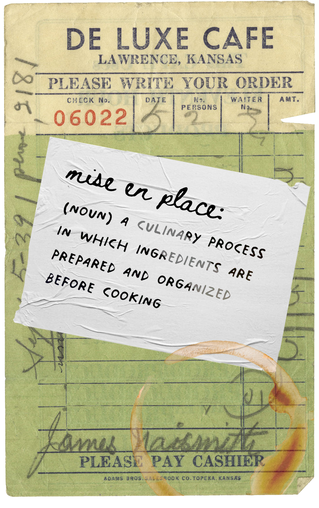

mise is...
dedicated to the home cook in all of us.
On mise, everyone from chefs des cuisine to backyard grillmasters can post a photo and recipe on Mise.
No recipe on hand? No worries! Make a post musing about the latest flavor or technique trends (flat bagels??).
